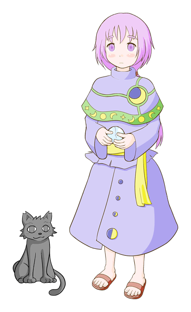
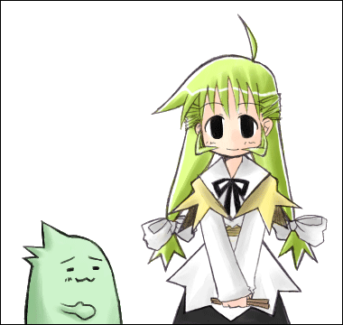
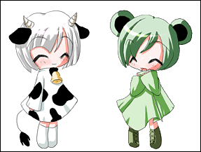
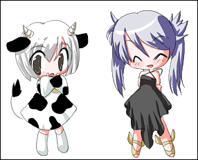

初心占い師ほたる

占い師と黒猫のゴーストです。
シェルをリニューアルしました。（旧シェルも同梱しています）
ひのき “the ChopSticks”

伐り倒されて割り箸にされてしまったヒノキの精霊と、葉緑体生物のゴーストです。
フリーシェル「割り箸」（白兎一哉さん作）を使用しています。
まっちゃみるく。


とうとうお笑いブームに乗ることができなかったうしとかえるの芸人です。
フリーシェル「うしかえる」（あまなさん作）を使用しています。
過去バージョンについて
このページやGitHubからも入手できないくらい古いバージョンは、もしかしたら以下のページでダウンロードできるかもしれません。
共有OneDrive